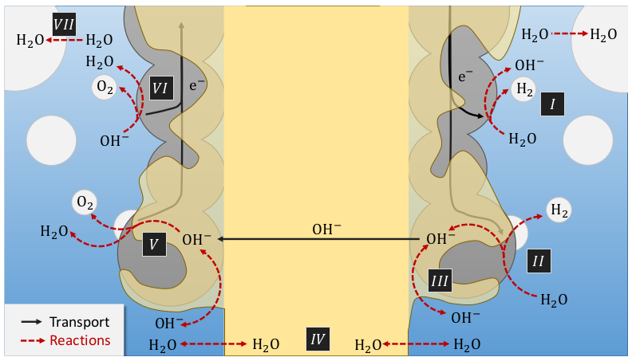
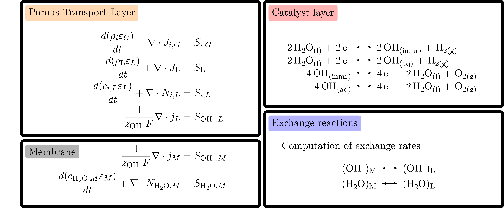
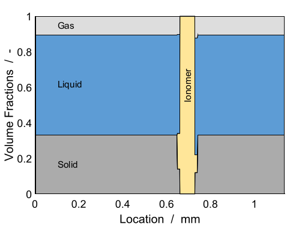

The implementation of a AEM simulation code was motivated by the need for better simulation capabilities for H2 electrolysis and the possibility to validate the code using an implementation we had access to, which is also the one used in [GBK+23]. The mathematical model for AEM is complex and includes many coupled processes . We refer to the papers mentioned above for all the details. Here, we include a figure from [GBK+23] which illustrates the following processes
Two parallel ionic conduction path ways: ionomer and liquid electrolyte,
Water concentration gradient build-up in the membrane inducing water exchange between electrodes,
Water exchange between the liquid and gas phases in the electrolyte,
Hydroxide exchange between the electrolyte and ionomer.
{kind=link}

We use a model hierarchy which enables us to structure the code in a hopefully clearly readable way. The main model is split into three models
Oxygen Evolution Electrode,
Ionomer Membrane,
Hydrogen Evolution Electrode.

The electrode models share the same structure given by
Porous Transport Layer,
Catalyst Layer,
Exchange Reactions Model,

The governing equations consists of charge and mass conservations equations with exchange source terms, see Figure. They are assembled at each model level for the core parts while the coupling terms are assembled at levels above in the model hierarchy. We use generic discrete spatial differentiation operators that can be applied to any dimension, even if the geometry we have setup for the result in this model is only 1D. Once the equations are discretized in space, we discretize in time and solve the resulting non-linear system of equations using an implicit scheme. This approach is robust independently of the choice oftime step size. We use automatic differentiation to assemble the equations and compute the derivative of the system that are needed in the Newton algorithmused to solve the equations. These computation steps are in fact generic and we rely on the BattMo infrastructure to run them.
{kind=link}

We consider a one-dimensional electrolyser cell where the volume fractions of each component are given in Figure below. We increase the current linearly from 0 to 3 A/cm^2. The pressures at the boundary are set to 1 atmosphere and the \(OH^{-}\) concentration to 1 mol/litre.
{kind=link}

Volume fractions used initially in the cell. Illustration picture taken from [GBK+23].
The input datas are given in a json format. A simple way to get acquainted to the format is to look at the examples used in the example below. We provide also json schemas that describes these inputs:
Catalyst Layer CatalystLayer.schema.json
Electrolyser Electrolyser.schema.json
Evolution Electrode EvolutionElectrode.schema.json
Exchange Reaction ExchangeReaction.schema.json
Ionomer Membrane IonomerMembrane.schema.json
Porous Transport Layer PorousTransportLayer.schema.json
Electrolyser Geometry ElectrolyserGeometry.schema.json
Here comes the listing of the code: